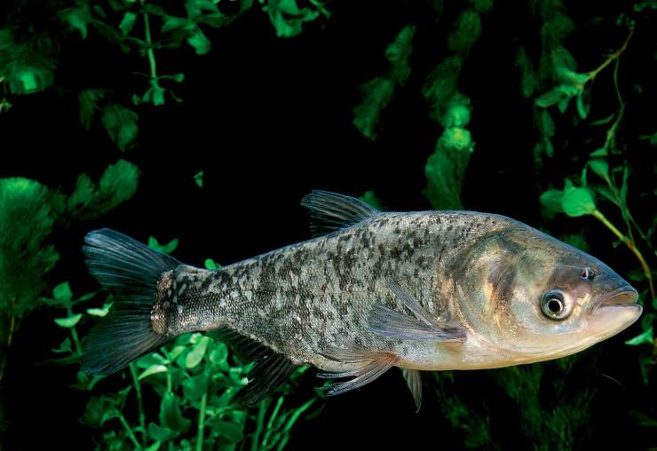

草鱼 Grass carp
又称鲩、油鲩、草鲩、白鲩、草鱼、草根（东北）、混子、黑青鱼等。
身体长而“秀气”，体色为青黄色，腹部略显白色。鳞片大而粗。它的背鳍、胸鳍、腹鳍和尾鳍都比青鱼小而短。
栖息于平原地区的江河湖泊，一般喜居于水的中下层和近岸多水草区域。性活泼，游泳迅速，常成群觅食。为典型的草食性鱼类。
草鱼幼鱼期则食幼虫，藻类等，草鱼也吃一些荤食，如蚯蚓，蜻蜓等。成年后食料是高等水生植物和部分陆草，其中以高等水生植物的苦草、轮叶黑藻、小茨藻、眼子藻、浮藻、芜藻最喜食。
在干流或湖泊的深水处越冬。因其生长迅速，饲料来源广，是中国淡水养殖的四大家鱼之一。
鲢鱼
又叫白鲢、鳊鱼、水鲢、跳鲢、鲢子，属于鲤形目，鲤科，是著名的四大家鱼之一。
体形侧扁、稍高，呈纺锤形，背部青灰色，两侧及腹部白色。胸鳍不超过腹鳍基部。
各鳍色灰白。头较大。眼睛位置很低。鳞片细小。腹部正中角质棱自胸鳍下方直延达肛门。形态和鳙鱼相似，鲢鱼性急躁，善跳跃。
鲢鱼味甘，性平，无毒，其肉质鲜嫩，营养丰富，是较宜养殖的优良鱼种之一。为我国主要的淡水养殖鱼类之一。
分布在全国各大水系。鲢鱼是人工饲养的大型淡水鱼，生长快、疾病少、产量高，多与草鱼、鲤鱼混养。鲢鱼鳞片细而小。
鳙鱼 Aristichthys nobilis （Richardson）

又叫花鲢、黄鲢、鱃鱼、胖头鱼、包头鱼、大头鱼、黑鲢、麻鲢、也有叫雄鱼。
性温顺，行动迟缓。主要浮游动物为食，也吃少量浮游植物。一般4冬龄以上才达性成熟。产卵期在4—7月。在流水中产漂浮性卵。生长较快。最大个体重达70—80市斤。天然产量也很大。
身体有点像鲢鱼，但头比鲢鱼要大得多，故又名“胖头鱼”；背面暗黑色，并有不规则黑点，因而俗称“花鲢”。它的鳞片与鲢鱼相似，细而小。是淡水鱼的一种。有“水中清道夫”的雅称，中国四大家鱼之一。
外形似鲢鱼，体侧扁。头部大而宽，头长约为体长的1/3。口亦宽大，稍上翘。眼位低。
鳙鱼生长在淡水湖泊、河流、水库、池塘里。多分布在水的中上层。我国东部平原各主要水系均有产出。能食用，有益智商、助记忆、延缓衰老的作用。
青鱼 Mylopharyngodon piceus
属于鲤形目，鲤科，雅罗鱼亚科，青鱼属。英文名：Blackcarp。鱼体较长，青鱼体长可达150cm左右，体型近似圆筒形，腹部圆润，尾部偏扁，无腹棱。头部略带平扁，吻端钝着，相比草鱼略显尖突。口端位，呈弧形。鱼体背面背和鱼体侧面的上半部分为青黑色，腹部为灰白色。鳞大，圆形。青鱼通常栖息在水的中下层，生性不活泼。其主要的食物来源为螺蛳、蚌、蚬、蛤等，偶尔也捕食虾和昆虫幼虫。青鱼生长速度快，属于大型经济鱼类，主要分布于长江以南的平原地区
青鱼营养丰富，含有糖类、多种维生素、锌、钙、磷、铁、镁等矿物质，是淡水鱼中的上品。青鱼含丰富的硒、碘等微量元素。
鲫鱼 Carassius auratus
俗名鲫瓜子、喜头鱼，月鲫仔、土鲫、细头、鲋鱼、寒鲋，为鲤科鲫属的一种，在欧亚地区为常见淡水鱼。鲫鱼经过人工养殖和选育，可以产生许多新品种，例如金鱼就是由此产生的一种观赏鱼类，为其下的指名亚种。
鲫鱼主要是以植物为食的杂食性鱼，喜群集而行，择食而居。肉质细嫩，营养价值很高，每百克肉含蛋白质13克、脂肪11克，并含有大量的钙、磷、铁等矿物质。鲫鱼药用价值极高，其性平味甘，人胃、肾，具有和中补虚、除赢、温胃进食、补中生气之功效。
鲤鱼 Cyprinus carpio
鲤鱼鳞大，上腭两侧各有二须，单独或成小群地生活于平静且水草丛生的泥底的池塘、湖泊、河流中。在水域不大的地方有洄游的习性.
鱼是在亚洲原产的温带性淡水鱼。喜欢生活在平原上的暖和湖泊，或水流缓慢的河川里。分布在除澳洲和南美洲外的全世界。很早便在中国和日本当做观赏鱼或食用鱼，在德国等欧洲国家作为食用鱼被养殖。背鳍的根部长，没有脂鳍，通常口边有须，但也有的没有须。口腔的深处有咽喉齿，用来磨碎食物。鲤鱼的种类很多，约有2900种。。